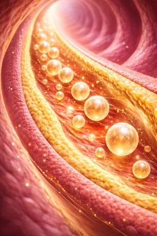

L’Élixir du Réparateur : Comprendre et Harmoniser son Cholestérol
Par Chest0 · 23 mars 2026
Introduction
Le cholestérol est sans doute la molécule la plus mal comprise et la plus injustement diabolisée de la biologie moderne. On nous a appris à le craindre comme un bouchon dans nos artères, alors qu’il est le matériau de construction fondamental de notre corps. Sans lui, pas de cerveau, pas d'hormones sexuelles, pas de digestion des graisses, et pas de vitamine D. Le cholestérol n'est pas le pyromane qui allume l'incendie ; il est le pompier qui vient tenter de l'éteindre.
Problème
Le véritable danger n'est pas le taux de cholestérol total, mais l'oxydation et l'inflammation de tes vaisseaux.
Le cholestérol oxydé : Sous l'effet du stress, du tabac ou du sucre, le cholestérol change de forme et devient agressif pour les parois artérielles.
L'inflammation chronique : Si tes artères sont enflammées (souvent à cause d'un excès de sucre), le corps envoie du cholestérol pour "platrer" les lésions. Plus l'inflammation est forte, plus le corps produit de "plâtre".
Le foie saturé : Quand le foie est débordé par les toxines ou les graisses trans, il perd sa capacité à recycler le cholestérol.
Résultat : une accumulation de plaques (athérosclérose) et une rigidité cardiovasculaire.
Promesse
En adoptant une approche de "soutien hépatique" et de "protection antioxydante", tu peux :
Fluidifier ton sang naturellement.
Protéger ton cholestérol contre l'oxydation pour qu'il reste utile et sain.
Rééquilibrer tes ratios (HDL/LDL) sans affamer tes cellules.
Bénéfice
L'alchimie du contrôle du cholestérol par la nature apporte :
Une protection cardiaque durable : Des artères souples et réactives.
Un équilibre hormonal boosté : Le cholestérol est le précurseur de la testostérone et des œstrogènes.
Une meilleure clarté mentale : Ton cerveau est l'organe le plus riche en cholestérol du corps humain.
Une digestion optimisée : Par une production de bile de qualité.

Pourquoi ce remède est efficace
Pour harmoniser le cholestérol, il ne faut pas le supprimer, mais le protéger.
Les Oméga-3 : Ils fluidifient les membranes cellulaires et réduisent l'inflammation qui appelle le "plâtre" de cholestérol.
Les Phytostérols : Présents dans les végétaux, ils entrent en compétition avec le cholestérol au niveau de l'absorption intestinale.
Les Fibres Solubles : Elles agissent comme une éponge qui capture l'excès de bile (chargée de cholestérol recyclé) pour l'évacuer par les selles.
Le Foie (Le Chef d'Orchestre) : C'est lui qui produit 80% de ton cholestérol. S'il est en bonne santé, ton taux est stable.
Les bienfaits
Voici les piliers d'une santé cardiovasculaire alchimique :
Action Anti-oxydante : Empêche le LDL de devenir "toxique".
Soutien Hépatique : Aide le foie à faire son travail de recyclage.
Protection de l'Endothélium : Garde la paroi interne des vaisseaux lisse et glissante.
La recette : L’Élixir "Protecteur Vasculaire"
Un mélange d'ingrédients nobles pour protéger tes graisses circulantes.
Ingrédients :
1 cuillère à soupe d'Huile de Lin ou de Caméline (bio) : Pour les Oméga-3.
1/2 cuillère à café de Cannelle de Ceylan : Pour réguler la glycémie (le sucre oxyde le cholestérol).
1 cuillère à café de Lécithine de Soja (non OGM) ou de Tournesol : Un émulsifiant naturel qui empêche les graisses de s'agglomérer.
Le jus d'une moitié de Pamplemousse (si aucun traitement médical) ou de Citron : Pour stimuler le foie.
Protocole de préparation :
L'Émulsion : Dans un petit bol, mélange l'huile et la lécithine.
L'Activation : Ajoute l'ail écrasé (laisse-le reposer 5 min avant pour que l'allicine se libère).
L'Union : Ajoute le jus d'agrume et la cannelle. Remue énergiquement.
La Dégustation : À prendre en fin de repas principal pour aider à traiter les graisses alimentaires.
Comment l’utiliser
Ce rituel est à pratiquer en cure de 21 jours lors des changements de saison.
Alimentation : Remplace les graisses trans (biscuits, plats préparés) par des "bonnes graisses" (avocats, noix, petits poissons gras).
Mouvement : L'activité physique est le seul moyen efficace d'augmenter le "bon" cholestérol (HDL).
À qui s’adresse ce rituel
Aux personnes stressées : Dont le cholestérol monte par besoin de réparation nerveuse.
Aux "bons vivants" : Souhaitant protéger leur cœur tout en aimant manger.
Aux seniors : Pour maintenir la souplesse artérielle.
À ceux qui veulent éviter l'escalade médicamenteuse inutile.
Précautions
Interactions : Si tu prends des médicaments pour le cholestérol (statines) ou des anticoagulants, consulte ton médecin avant d'utiliser l'ail ou le pamplemousse à forte dose.
Équilibre : Ne supprime pas le cholestérol alimentaire (œufs) ; le corps compenserait en en fabriquant davantage lui-même.
Conclusion & appel à l’action
L’élixir du réparateur n’est pas une solution miracle immédiate.
C’est un rituel de reconnexion, une manière d’envoyer un message clair à ton corps : je te soutiens, je t’écoute, je te respecte.
👉 Pour rappel, si la nature ne l’a pas créé, ne le buvez pas. Les margarines "anti-cholestérol" industrielles sont des produits ultra-transformés que tes cellules ne reconnaissent pas.
Si tu souhaites aller plus loin dans cette approche naturelle du bien-être, je partage régulièrement :
des élixirs ciblés,
des rituels santé simples,
des guides pratiques pour renforcer le corps et apaiser le mental.
📚 Je suis auteur bien-être sous le pseudo Chest0 JM.S, et mes ouvrages sont disponibles sur Amazon.